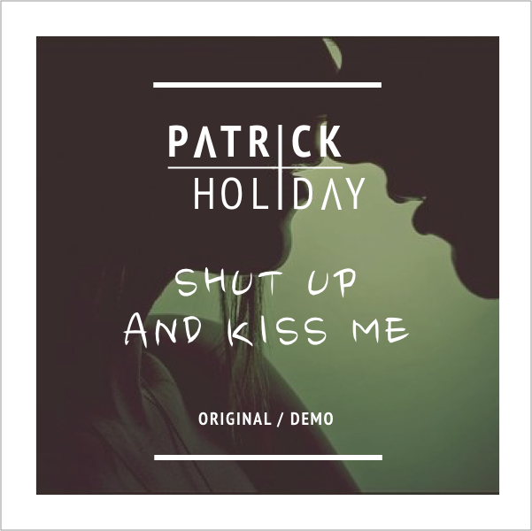

I was inspired to make this instrumental jam after spending a day out at La Piedra beach in Malibu. Came back, wrote and produced this one all in one weekend.

"Glimpse of Hope" is an RnB demo about knowing the last thing you need at the end of relationship is any chance of keeping it alive.

"Shut up and Kiss Me" is a simple pop love song about getting past the nerves when you're with someone new